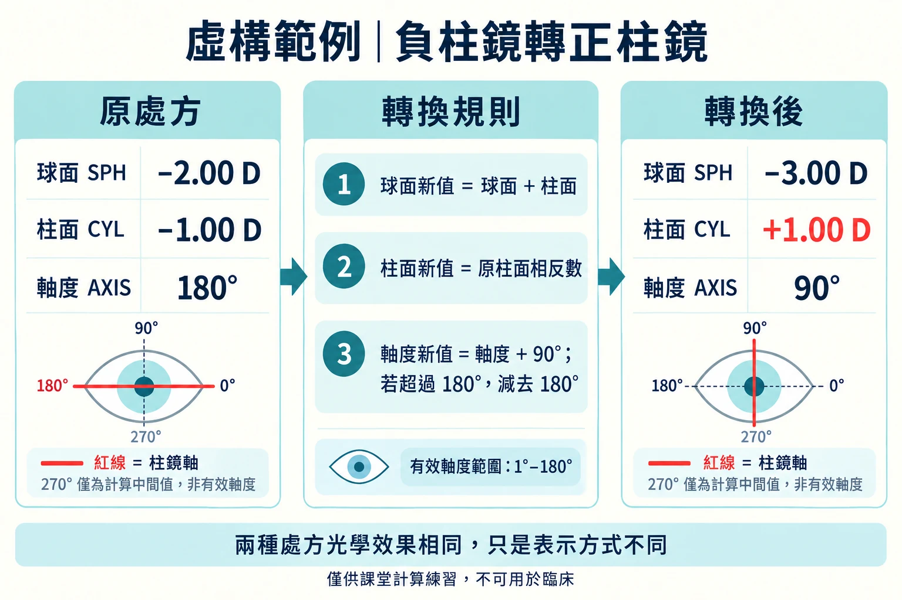
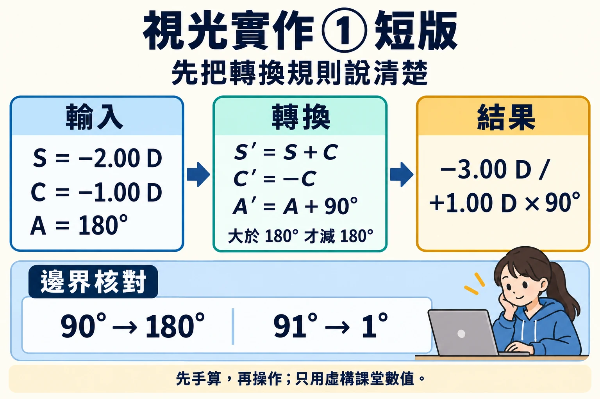
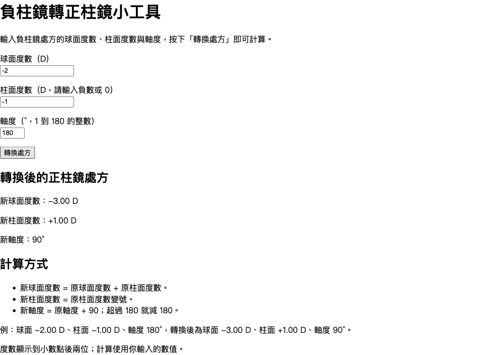
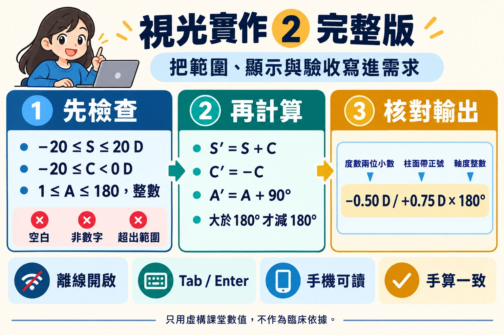
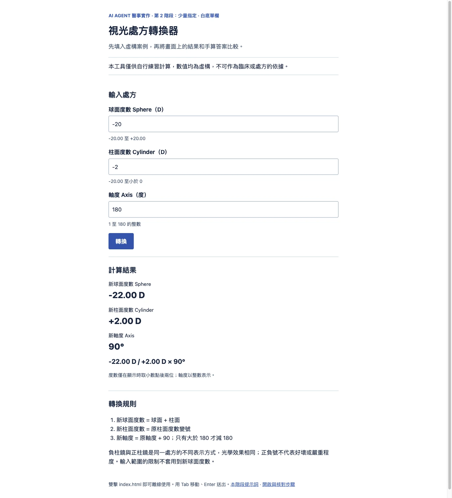
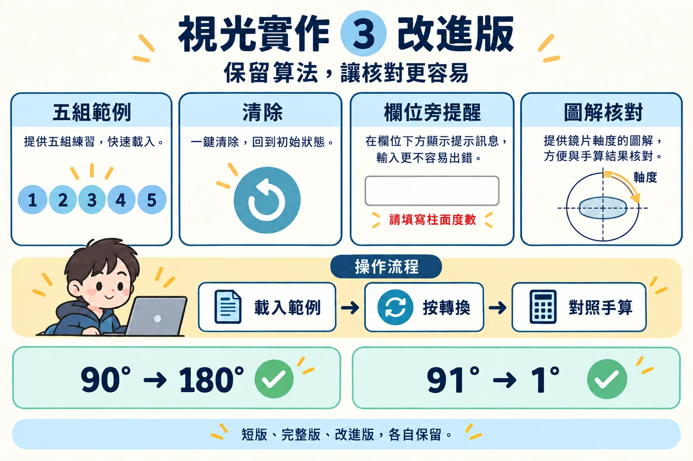
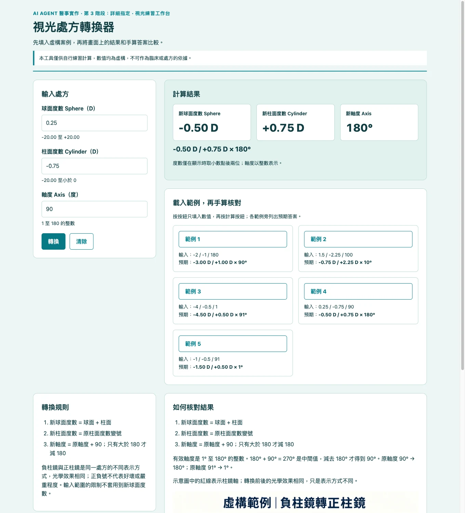

單元四 · 自主練習 · 視光系
單元四：視光處方轉換器
完整題目、可改寫提示詞、手算案例與驗收紀錄。先自行實作，再用保留的三個版本比較。
把處方轉換規則做成可操作工具，依序完成六個步驟；點選右欄可跳到本頁對應段落。
| 步驟 | 本頁段落 |
|---|---|
| 1 需求 | 讀教學圖與課堂規則 |
| 2 專案 | 準備空白資料夾與本機素材 |
| 3 最小版本 | 從 Basic 開始，保存提示與原始成果 |
| 4 實測 | 先寫預期，再操作與核對 |
| 5 修改 | Minor 補完整規格；Detailed 指定畫面與排列 |
| 6 交付 | 保留三版本、實際截圖與驗收表 |
01練習目標
製作一個可在瀏覽器直接開啟的小工具，將一筆虛構的眼鏡處方從負柱鏡形式轉換為正柱鏡形式。你要先說清楚需求，再請 AI Agent 做出最小可行產品（MVP），接著親自核對計算結果，最後提出一項具體的改進要求。
這是計算與介面設計練習，請只使用虛構數值。請勿輸入真實個案資料；本工具不得提供處方建議，也不得用於臨床決策。
02題目說明
視光系學生正在練習處方轉換。請製作一個單頁工具，提供以下三個輸入欄位：
- 球面度數（Sphere，單位：D）
- 柱面度數（Cylinder，單位：D）
- 軸度（Axis，單位：度）
名詞說明：負柱鏡與正柱鏡
- 負柱鏡（minus-cylinder）：處方中的柱面度數是負值，例如
-1.00 D。 - 正柱鏡（plus-cylinder）：處方中的柱面度數是正值，例如
+1.00 D。
兩者是散光矯正處方的不同表示方式；依規則轉換時，球面度數、柱面度數和軸度要一起調整，轉換前後的光學效果相同。正負號只表示柱面度數採用哪一種表示方式，不代表好壞或散光程度。
使用者按下「轉換」後，畫面要顯示等效的正柱鏡處方。請依照以下課堂規則計算：
- 新球面度數 = 原球面度數 + 原柱面度數。
- 新柱面度數 = 原柱面度數的相反數。
- 新軸度 = 原軸度 + 90 度；只有在結果大於 180 度時才減去 180 度。
- 軸度採 1 至 180 度表示，不使用 0 度作為處方軸度。
- 度數顯示至小數點後兩位；計算過程不可先行四捨五入。
第 3 條要特別小心：原軸度剛好是 90 度時，加 90 得到 180 度，沒有超過 180，所以不減，答案就是 180 度。如果寫成「等於 180 也要減」，就會得到 0 度這個無效的軸度。
圖解：從負柱鏡轉換為正柱鏡

圖中的虛構範例可用來理解每一步：球面度數為 -2.00 + (-1.00) = -3.00 D；柱面度數由 -1.00 D 改為 +1.00 D；軸度由 180° 加 90°，得到中間值 270°，再減 180°，得到有效軸度 90°。眼睛示意圖中的紅線表示柱鏡軸；270° 僅供說明計算過程，不能當成有效處方軸度。圖上的 0° 和 180° 是方向刻度；處方軸度使用 1°–180° 表示。轉換前後的處方光學效果相同，只是表示方式不同。
輸入的合理範圍
- 球面度數：-20.00 D 到 +20.00 D。
- 柱面度數：-20.00 D 到 小於 0。因為這個工具是把負柱鏡換成正柱鏡，輸入的柱面度數一定是負值。
- 柱面度數填 0 代表沒有散光，既不需要轉換，也沒有軸度可言，請顯示提醒而不是計算。填正值代表那張處方已經是正柱鏡了，也請顯示提醒。
- 軸度：1 到 180 之間的整數，不接受小數。
轉換後的球面度數是兩個度數相加，有可能低於 -20.00 D（例如 -20.00 加 -2.00 得到 -22.00），這是正常的，不要因此當成錯誤。範圍限制只適用於使用者輸入的值。
網頁要顯示轉換規則，並在每個輸入與輸出欄位標示名稱和單位。遇到空白、非數字或不符合條件的輸入時，要顯示清楚易懂的錯誤訊息。轉換後的柱面度數要正常顯示正號，不可以出現 -0.00 這種結果。
03MVP 驗收清單
你不需要看懂程式碼。以下每一項都是用眼睛看畫面、用手操作就能檢查的；只要有一項做不到，就把它寫進「學生驗收紀錄」，再請 AI Agent 修。
- AI 會告訴你要點哪個檔案；雙擊它就能用瀏覽器打開工具，不必安裝軟體、不必註冊帳號。
- 把 Wi-Fi 關掉再重新整理頁面，工具照樣算得出答案。
- 填入三個數值、按下「轉換」，就看到轉換後的球面度數、柱面度數和軸度三個答案，每個都標了單位。
- 畫面上看得到三條轉換規則、負柱鏡與正柱鏡的簡短說明，以及「僅供練習、不可用於臨床」的提醒。
- 故意亂填試試看：欄位留空、打中文字、球面度數填 +30、柱面度數填 0、柱面度數填 +1.00、軸度填 0、軸度填 200、軸度填 3.5。每一種都要跳出看得懂的提醒，而不是算出一個答案，也不是整頁沒反應。
- 不用滑鼠也能操作：用 Tab 鍵在欄位間移動、Enter 鍵送出，而且看得出現在停在哪個欄位。
- 視窗縮到手機寬度時版面不破圖、文字不需左右捲動。
- 請先自行手算，再用下列案例核對結果：
| 球面度數 | 柱面度數 | 軸度 | 預期正柱鏡處方 |
|---|---|---|---|
| -2.00 D | -1.00 D | 180° | -3.00 D / +1.00 D × 90° |
| +1.50 D | -2.25 D | 100° | -0.75 D / +2.25 D × 10° |
| -4.00 D | -0.50 D | 1° | -4.50 D / +0.50 D × 91° |
| +0.25 D | -0.75 D | 90° | -0.50 D / +0.75 D × 180° |
| -1.00 D | -0.50 D | 91° | -1.50 D / +0.50 D × 1° |
最後兩組是專門用來抓錯的邊界案例，請一定要試：第四組的軸度加 90 剛好等於 180，不必減，答錯的工具會給你 0°；第五組的軸度加 90 等於 181，要減，答錯的工具會給你 181°。
04給 AI Agent 的 MVP 提示詞
先開啟一個新的空白專案資料夾。本單元依序有短版、完整版與改進版三個階段，請保留每個階段的成果，重點在比較「自由規格 → 少量指定 → 詳細指定」如何改變成果。短版不指定配色或欄位版面；完整版增加簡單外觀要求；改進版明列配色、區塊位置與手機排列。
兩段都刻意寫成你自己講得出來的樣子：從頭到尾只有「我想要一個什麼樣的工具」。處方轉換的部分講得很清楚（那是你的專業），軟體的部分只描述你要看到什麼結果，不去指定程式怎麼寫（那是 AI 的工作）。
| 階段 | 提示詞指定什麼 | 要比較的外觀 |
|---|---|---|
| 自由規格 | 空白起點，不套用先前的網頁外觀；不指定配色或欄位版面。 | 本次原始成果使用瀏覽器預設外觀。 |
| 少量指定 | 白底、深色文字、藍色按鈕、單欄順序；其餘細節由 AI 決定。 | 輸入 → 結果 → 規則與說明。 |
| 詳細指定 | 清楚描述配色、文字大小、留白、圓角、區塊位置與手機排列。 | 青綠配色；大視窗左側輸入、右側結果與兩欄範例；窄視窗改為單欄。 |
先準備案例專案
建立自己的 optometry-practice 資料夾，保存需求、提示與預期答案。Basic 在另一個空白資料夾、新對話中，只貼下方第一階段提示，不先提供完整規格或先前網頁。Minor 在另一個空白資料夾（02-full）、新對話中從頭製作，不沿用短版；Detailed 把已通過第 2 階段檢核的完整版複製到 03-improved，再依指定配色與區塊位置修改。本頁教學圖在 Detailed 階段放入本機 assets/；每版保留實際截圖與驗收紀錄。
第一步 Basic：瀏覽器預設外觀 · 先貼短版

在新的空白資料夾開新對話，依序貼上兩段提示：第一段只設定全新的起點，等 AI 回覆後，再貼第二段提出工具需求。完成後，先試一組正常數值，再記錄你想補充的要求。
我是完全沒有寫程式經驗的視光系學生。接下來要在這個全新的空白資料夾做一個小工具。
請不要使用之前做過的網頁、配色或排列方式，也不要查看其他專案；畫面只使用瀏覽器原本的字、欄位和按鈕外觀，不另外美化。
這一步先不要建立任何檔案，回覆「了解」，等我提出需求。我想做一個把負柱鏡處方換成正柱鏡處方的小工具。輸入球面度數、柱面度數、軸度，按一下就顯示新處方。
規則是：新球面＝球面＋柱面；新柱面＝原柱面變號；新軸度＝原軸度＋90，只有超過 180 才減去 180。
請做成在自己的電腦上雙擊就能開啟、不用安裝也不用連網的網頁。做完用編號步驟告訴我要開哪個檔案、填哪三格、按哪個按鈕、去哪裡看結果。請幫我核對 -2、-1、180 得到 -3、+1、90；不要只給我程式叫我自己完成。可能的 AI 回覆｜第 1 階段
以下只是參考，每次的字句與排列都可能不同；請用完成檢核判斷，而不是逐字比對。
（提示 1 之後）了解。
（提示 2 之後）
已在這個資料夾做好「負柱鏡轉正柱鏡小工具」，雙擊就能開啟，不用安裝也不用連網。
（1）在資料夾中找到 index.html，用滑鼠雙擊，它會在瀏覽器開啟。
（2）在「球面度數」填 -2.00，「柱面度數」填 -1.00，「軸度」填 180。
（3）按「轉換處方」。
（4）在按鈕下方看結果：新球面度數、新柱面度數和新軸度。
我核對過 -2.00、-1.00、180：
新球面＝-2.00＋（-1.00）＝-3.00 D
新柱面＝-1.00 變號＝+1.00 D
新軸度＝180＋90＝270，超過 180，減去 180 得 90°
結果是 -3.00 D / +1.00 D × 90°，和你給的答案相同。
補充：度數顯示到小數點後兩位；軸度請填 1 到 180 的整數。柱面填 0 時，工具仍會照公式算出軸度。預期成果 · 第 1 階段
輸入 -2.00 D / -1.00 D × 180°，得到 -3.00 D / +1.00 D × 90°。原軸度 90° 應得到 180°，91° 應得到 1°。

本次 AI 自行決定度數顯示兩位小數、軸度限整數 1–180，並接受柱面 0；它沒有加入完整版的球面與柱面度數上下限。柱面 0 仍算軸度的行為，正是接著應辨認並提出修正的項目。
完成檢核 · 第 1 階段
手算五組案例，尤其核對軸度 90° 與 91°；錯填時不得留下上一筆答案。
同一段提示每次可能得到不同成果，請自行驗收。
做出來以後先別急著往下。花兩分鐘操作它，然後把下面這些問題問自己一遍：軸度填 90，它給我幾度？柱面度數填 0，它會怎麼處理？柱面度數填 +1.00 呢？軸度填 3.5 或填 200 會怎樣？度數顯示幾位小數，是誰決定的？
短版沒有錯，它只是把這些決定全部交給了 AI。你在畫面上看到的每一個「它自己決定的細節」，都是你沒講的部分。
第二步 Minor：白底、藍色按鈕、單欄 · 再貼完整版

完整版不是修改短版，而是從頭重做：在另一個空白資料夾開新對話，依序貼上兩段提示，第一段設定全新的起點，第二段提出完整版需求。完整版講的就是你剛才發現自己漏掉的那些事：
我是完全沒有寫程式經驗的視光系學生。這次要從頭做一個全新的版本：請把這個資料夾當作全新的空白資料夾，不要查看或沿用之前做過的任何版本（包括短版）的網頁、程式、配色或排列方式。請替我完成需要的檔案，不要要求我讀懂或修改程式。
這一步先不要建立任何檔案，回覆「了解」，等我提出需求。我想要一個處方轉換的網頁小工具，名字叫「視光處方轉換器」。用途是：把一筆負柱鏡（柱面度數是負值）的眼鏡處方，換算成光學效果相同的正柱鏡（柱面度數是正值）處方。
使用方式：在我自己的筆電上雙擊就能打開的網頁，不用安裝軟體、不用註冊帳號，沒有網路也要能算。
輸入欄位（每一個都要標示清楚名稱和單位）：
（1）球面度數 Sphere（單位 D）
（2）柱面度數 Cylinder（單位 D）
（3）軸度 Axis（單位 度）
另外給我一個「轉換」按鈕，和一個明顯的結果區。
計算與輸出：按下轉換後，請算出並顯示新的球面度數、柱面度數和軸度三個值，都要標上單位。規則是：
（1）新球面度數 = 原球面度數 + 原柱面度數
（2）新柱面度數 = 原柱面度數的相反數
（3）新軸度 = 原軸度 + 90；只有在結果大於 180 的時候才減去 180
第 3 條請照字面做：原軸度剛好是 90 的時候，加 90 等於 180，沒有超過 180，所以不要減，答案就是 180 度。如果寫成「等於 180 也減」，會算出 0 度，那不是有效的處方軸度。
合理範圍：球面度數 -20.00 D 到 +20.00 D；柱面度數 -20.00 D 到小於 0；軸度是 1 到 180 之間的整數，不收小數。柱面度數一定是負值，因為這個工具是把負柱鏡換成正柱鏡：填 0 代表沒有散光，不需要轉換也沒有軸度可言；填正值代表那張處方本來就是正柱鏡了。這兩種情況都請提醒我，不要硬算。
錯誤處理：欄位空白、填的不是數字、超出上面的合理範圍、軸度填了小數，或數字大到電腦算不出來，都不要計算，改成顯示一句我看得懂的提醒，告訴我哪一格不對、為什麼不對。頁面不可以整個沒反應。
數字顯示：度數顯示到小數點後兩位，計算過程要用完整的數字，不要提早四捨五入。轉換後的柱面度數要正常帶正號顯示，不要出現 -0.00 這種結果。軸度是整數，不要加小數點。轉換後的球面度數有可能低於 -20.00 D（兩個度數相加的結果），那是正常的，不要當成錯誤。
畫面安排（少量指定）：白底、深色文字、藍色操作按鈕。所有內容由上往下排成一欄：標題、輸入、結果、規則與說明，不要左右分欄。欄位之間留空間，其他大小與細節由你安排。
畫面與操作：字不要太小、顏色對比夠清楚、手機打開不跑版，用鍵盤的 Tab（跳到下一格）與 Enter（確認）也能從頭操作到底。畫面上要看得到那三條轉換規則，還要用一兩句話說明：負柱鏡和正柱鏡只是同一張處方的兩種表示方式，光學效果相同，正負號不代表好壞，也不代表散光的嚴重程度。另外請放一行明顯的字：「本工具僅供自行練習計算，數值均為虛構，不可作為臨床或處方的依據。」
請不要加的東西：個案紀錄、診斷、治療或配鏡建議、真實的病人資料，以及任何需要連到外面網站或服務的功能。
做完請用編號步驟帶我找到檔案、開啟網頁、填入數值、按按鈕、查看結果。再告訴我怎麼填幾組處方進去、對照手算的結果確認它沒算錯。你如果沒有真的自己算過、對過答案，就不要跟我說「已經驗證完成」。可能的 AI 回覆｜第 2 階段
以下只是參考，每次的字句與排列都可能不同；請用完成檢核判斷，而不是逐字比對。
（提示 1 之後）了解。
（提示 2 之後）
已做好「視光處方轉換器」，雙擊就能開啟，不用安裝、不用帳號，沒有網路也能算。
（1）在資料夾中找到 index.html，用滑鼠雙擊開啟。
（2）依序填入球面度數 Sphere（D）、柱面度數 Cylinder（D）、軸度 Axis（度）；按 Tab 可以跳到下一格。
（3）按「轉換」，或直接按 Enter。
（4）在結果區看新球面度數、新柱面度數和新軸度，三個都標有單位。
我親自用下面五組處方核對過：
輸入｜預期正柱鏡處方｜工具結果
-2.00 D / -1.00 D × 180°｜-3.00 D / +1.00 D × 90°｜相同
+1.50 D / -2.25 D × 100°｜-0.75 D / +2.25 D × 10°｜相同
-4.00 D / -0.50 D × 1°｜-4.50 D / +0.50 D × 91°｜相同
+0.25 D / -0.75 D × 90°｜-0.50 D / +0.75 D × 180°｜相同（加 90 剛好 180，沒有減）
-1.00 D / -0.50 D × 91°｜-1.50 D / +0.50 D × 1°｜相同（加 90 得 181，減成 1）
另外試了 -20.00 / -2.00 × 180，得到 -22.00 D / +2.00 D × 90°；轉換後低於 -20 D 是正常的，沒有被當成錯誤。
錯填時不會計算：欄位空白、填文字、球面超過 ±20、柱面填 0 或正值、軸度填 0、200 或 3.5，都會顯示是哪一格不對、為什麼不對。
請你也自己填幾組，對照手算結果。預期成果 · 第 2 階段
外觀驗收：白底、深色文字、藍色按鈕；輸入 → 結果 → 規則與說明的單欄版面。
三個欄位與輸出都有單位；限制輸入範圍、阻擋錯填，度數顯示兩位小數。新球面度數可以低於 -20 D。

完成檢核 · 第 2 階段
試空白、文字、柱面 0 或正值、軸度小數及超界；用 Tab 與 Enter 操作，再離線重新開啟。
同一段提示每次可能得到不同成果，請自行驗收。
05完成 MVP 後的改進要求
第三步 Detailed：清楚指定畫面與手機排列 · 提出改進要求

改進版是在已驗收的完整版上改進：先確認完整版通過第 2 階段的完成檢核，再依序貼上兩段提示，第一段複製這份完整版，第二段在副本上提出改進要求。改進版保留原有欄位與算法，只以具體的畫面與排列要求改變外觀。
我完全沒有寫程式的經驗。請用一般用語說明，一次帶我做一小步，不要要求我讀懂或手動修改程式。
請先把已經通過第 2 階段檢核的完整版複製一份到新的資料夾，之後只修改這份副本；完整版保留不動。原本的欄位、計算方式與小數位數不要改動。
複製好後告訴我副本放在哪裡，先不要做其他修改，等我提出改進需求。畫面安排（詳細指定）：計算規則、輸入欄位和小數位數都保持不變，這次請依下列要求重新安排畫面。
（1）整體像一張青綠色的學習工作台：淡青綠背景、深色文字、青綠主要按鈕；每一區是白底圓角卡片，結果區用淡青色。錯誤要有清楚文字，不要只改顏色。
（2）在筆電的大視窗，頂端放標題與練習用途提醒。左邊約占三分之一，放輸入與轉換按鈕；右邊約占三分之二，上方放結果、下方放五組範例。三個結果左右並排，範例每列兩張。底部左邊放規則，右邊放「如何核對結果」及教學圖。
（3）一般文字與欄位名稱要清楚，補充說明可以稍小；結果數字約是一般文字的兩倍大。區塊之間與卡片內側留空間，文字不要貼邊。按鈕要讓手指容易點到，用鍵盤移動時也看得出目前停在哪裡。
（4）在手機或較窄的視窗，改成由上往下的一欄：輸入、結果、範例、規則、核對圖解。三個結果和範例也一張一張往下排；不用左右滑動才能看完，欄位旁的錯誤文字要完整顯示。
（5）沒有網路時，圖片、計算與按鈕仍要能用。請替我處理需要的檔案，最後用一般用語說明如何開啟與核對。
載入範例按鈕：我有五組處方每次都要拿來核對，每次重打很麻煩。請幫這五組各做一個按鈕，按下去就自動把那組數字填進欄位，按鈕旁邊寫出應該算出來的答案，我用來對照工具算得對不對。五組是：
（1）-2.00 D / -1.00 D × 180° → -3.00 D / +1.00 D × 90°
（2）+1.50 D / -2.25 D × 100° → -0.75 D / +2.25 D × 10°
（3）-4.00 D / -0.50 D × 1° → -4.50 D / +0.50 D × 91°
（4）+0.25 D / -0.75 D × 90° → -0.50 D / +0.75 D × 180°
（5）-1.00 D / -0.50 D × 91° → -1.50 D / +0.50 D × 1°
第 4 組和第 5 組是我拿來抓錯的：第 4 組加 90 剛好等於 180，不必減；第 5 組加 90 等於 181，要減成 1。
清除按鈕：按下去把所有欄位清空，之前的答案和錯誤提醒也一起消失。
錯誤提醒的位置：放在出錯的那一格旁邊，不要全部塞在頁面最上面，這樣我才知道是哪一格填錯。
「如何核對結果」說明：加一小段，重新講一次三條轉換規則，並且寫清楚：有效軸度是 1° 到 180° 的整數；計算中間可能出現 270°，那只是中間值，不能當成處方軸度；示意圖上的紅線代表柱鏡軸；轉換前後的處方光學效果相同，只是表示方式不同。
操作：請讓我用 Tab 鍵移到新按鈕，再按 Enter 操作；目前停在哪裡要看得清楚。
請不要加的東西：個案紀錄、診斷、治療或配鏡建議、真實的病人資料、處方存檔，以及任何需要連到外面網站或服務的功能。
做完請用一般用語說明改了哪些畫面和操作，不要列程式寫法。用編號步驟帶我載入每組範例、按計算、對照預期答案、按清除；再告訴我怎麼縮小視窗，確認內容有改成一欄。請區分你親自測過的結果與還要我確認的項目。可能的 AI 回覆｜第 3 階段
以下只是參考，每次的字句與排列都可能不同；請用完成檢核判斷，而不是逐字比對。
（提示 1 之後）
已把完整版複製一份，副本放在 03-improved 資料夾；原本的完整版沒有改動。副本的欄位、計算方式與小數位數都和完整版相同。請告訴我想怎麼改進。
（提示 2 之後）
已在 03-improved 副本中改好畫面；計算規則、欄位和小數位數都沒有改動。
改了哪些畫面和操作
（1）淡青綠背景、白底圓角卡片、青綠色「轉換」按鈕；結果區是淡青色，錯誤會用文字說明。
（2）大視窗：左邊放輸入，右邊上方三個結果並排、下方五組範例每列兩張；底部左邊是規則，右邊是「如何核對結果」與示意圖。
（3）新增「範例 1」到「範例 5」按鈕，旁邊寫出預期答案；新增「清除」按鈕。
（4）錯誤提醒改放在出錯欄位旁邊。
（5）示意圖存在 assets 資料夾，沒有網路也能顯示。
請照這樣核對
（1）雙擊 03-improved 資料夾中的 index.html。
（2）按「範例 1」，再按「轉換」，應得到 -3.00 D / +1.00 D × 90°。
（3）依序做範例 2 到 5；範例 4 應為 -0.50 D / +0.75 D × 180°，範例 5 應為 -1.50 D / +0.50 D × 1°。
（4）按「清除」，欄位、結果和提醒都應消失。
（5）把瀏覽器視窗拉窄，內容應改成一欄：輸入、結果、範例、規則、核對圖解。
我親自測過：五組範例的轉換結果、清除按鈕、用 Tab 和 Enter 操作範例按鈕。
還要你確認：窄視窗或手機上是否好讀，以及關掉網路後示意圖是否仍會顯示。預期成果 · 第 3 階段
外觀驗收：青綠色工作台：左側輸入、右側結果與兩欄範例；底部規則與核對圖解。手機或窄視窗時依指定順序改成單欄。
保留完整版的欄位與算法，增加五組範例、清除、欄位旁提醒與圖解。載入範例後仍要按「轉換」並對照預期答案。

完成檢核 · 第 3 階段
核對青綠配色、桌面分區與手機單欄；逐一載入五組範例並轉換；清除欄位、答案與提醒；只用鍵盤操作範例按鈕，確認說明圖能載入。
同一段提示每次可能得到不同成果，請自行驗收。
06學生驗收紀錄
- AI Agent 正確完成的一件事：
- 我發現的一個問題或不清楚之處：
- 我用來重現問題的輸入：
- 我要求的修改，以及我如何確認修改有效：
07預期成果 · 三階段版本比較
外觀規格的進展：自由規格（原生外觀） → 少量指定（白底藍色單欄） → 詳細指定（青綠色工作台：左側輸入、右側結果與兩欄範例；底部規則與核對圖解。）。
比較重點：短版從空白起點生成，沒有另外美化，採用瀏覽器原本的欄位與瀏覽器提醒；它接受柱面 0，未限制球面及柱面度數範圍。完整版加入明確範圍、柱面 0 不需轉換的提醒、處方說明與版面；改進版再加入五組範例、清除、欄位旁提醒與圖解。
| 階段 | 開啟成果 | 重點 |
|---|---|---|
| 第一階段：自由規格 | 開啟 第一階段：自由規格 | 空白起點、原生外觀；辨認本次 AI 自行決定的細節。 |
| 第二階段：少量指定 | 開啟 第二階段：少量指定 | 白底藍色單欄；核對輸入、精度與錯填。 |
| 第三階段：詳細指定 | 開啟 第三階段：詳細指定 | 青綠色工作台：左側輸入、右側結果與兩欄範例；底部規則與核對圖解。核對範例、提醒與手機版面。 |
本頁的概念圖卡與網頁截圖都只是圖片，不是可操作的工具；請自行完成驗收。